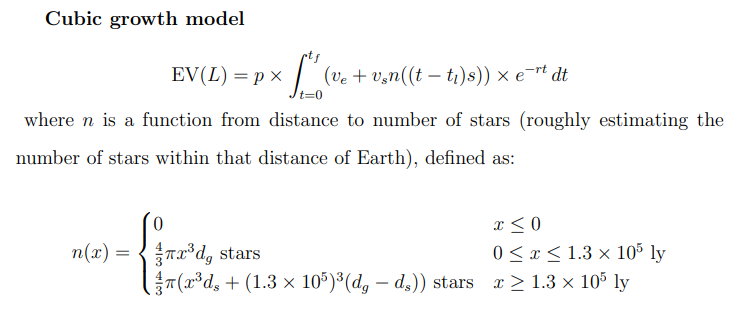
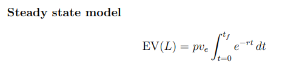
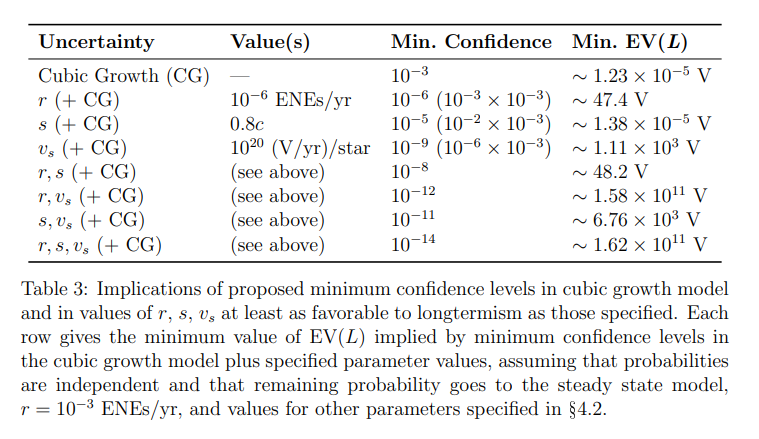

Summary: The Epistemic Challenge to Longtermism
Abstract
Longtermists claim that what we ought to do is mainly determined by how our actions might affect the very long-run future. A natural objection to longtermism is that these effects may be nearly impossible to predict— perhaps so close to impossible that, despite the astronomical importance of the far future, the expected value of our present actions is mainly determined by near-term considerations. This paper aims to precisify and evaluate one version of this epistemic objection to longtermism. To that end, I develop two simple models for comparing ‘longtermist’ and ‘neartermist’ interventions, incorporating the idea that, as we look further into the future, the effects of any present intervention become progressively harder to predict. These models yield mixed conclusions: If we simply aim to maximize expected value, and don’t mind premising our choices on minuscule probabilities of astronomical payoffs, the case for longtermism looks robust. But on some prima facie plausible empirical worldviews, the expectational superiority of longtermist interventions depends heavily on these ‘Pascalian’ probabilities. So the case for longtermism may depend either on plausible but non-obvious empirical claims or on a tolerance for Pascalian fanaticism. — Tarsney
Longtermism intro
If your aim is to do as much good as possible, where should you focus your time and resources? What problems should you try to solve, and what opportunities should you try to exploit? One partial answer to this question claims that you should focus mainly on improving the very long-run future. Following Greaves and MacAskill (2019) and Ord (2020), let’s call this view longtermism. — Tarsney
The future is big but unpredictable
The case for longtermism starts from the observation that the far future is very big. A bit more precisely, the far future of human-originating civilization holds vastly greater potential for value and disvalue than the near future. This is true for two reasons. — Tarsney
The reasons are duration and spatial extent/resource utilization
But longtermism faces a countervailing challenge: The far future, though very big, is also unpredictable. And just as the scale of the future increases the further ahead we look, so our ability to predict the future—and to predict the effects of our present choices—decreases. The case for longtermism depends not just on the intrinsic importance of the far future but also on our ability to predictably influence it for the better. So we might ask (imprecisely for now): Does the importance of humanity’s future grow faster than our capacity for predictable influence shrinks?
Reasons to be pessimistic about predictive ability
There is prima facie reason to be pessimistic about our ability to predict (and hence predictably influence) the far future. First, the existing empirical literature on political and economic forecasting finds that human predictors—even well-qualified experts—often perform very poorly, in some contexts doing little better than chance (Tetlock, 2005). Second, the limited empirical literature that directly compares the accuracy of social, economic, or technological forecasts on shorter and longer timescales consistently confirms the commonsense expectation that forecasting accuracy declines significantly as time horizons increase.4 And if this is true on the modest timescales to which existing empirical research has access, we should suspect that it is all the more true on scales of centuries or millennia. Third, we know on theoretical grounds that complex systems can be extremely sensitive to initial conditions, such that very small changes produce very large differences in later conditions (Lorenz, 1963; Schuster and Just, 2006). If human societies exhibit this sort of behavior with respect to features that determine the long-term effects of our actions (to put it very roughly), then attempts to predictably influence the far future may be insuperably stymied by our inability to measure the present state of the world with arbitrary precision.5 Fourth and finally, it is hard to find historical examples of anyone successfully predicting the future—let alone predicting the effects of their present choices—even on the scale of centuries, let alone millennia or longer.6 — Tarsney
Tarsney investigates big/unpredictable
If our ability to predict the long-term effects of our present choices is poor enough, then even if the far future is overwhelmingly important, the main determinants of what we presently ought to do might lie mainly in the near future. The aim of this paper is to investigate this epistemic challenge to longtermism. — Tarsney
The goal of the paper
Tarsney distinguishes some possible versions of the epistemic challenge and evaluates one version:
My ambitions are limited, however. One is simply to state the challenge clearly and distinguish some of its possible variants. The other, which occupies most of the paper, is to evaluate one particular version of the challenge, defined and circumscribed by a number of substantive assumptions, and directed at a particular version of longtermism. This modest approach is, I think, forced on us by the nature of the question. Both the scale of the far future and our ability to predictably affect it are matters of degree, and so assessing the epistemic challenge is inevitably a quantitative exercise. The structure of this exercise, and its quantitative inputs, are sensitive to various background assumptions, including one’s choice of epistemic, ethical, and decision-theoretic frameworks, and an open-ended list of empirical assumptions (e.g., technological assumptions about the eventual capabilities of an advanced civilization, and cosmological assumptions about the long-term fate of the universe). We can therefore only assess the epistemic challenge by considering different sets of plausible assumptions one at a time. I have tried to assume no more than is necessary to make the challenge tractable (that is, to bite off as large a piece of the challenge as I can fruitfully evaluate in one paper), and to make assumptions that are substantively plausible and otherwise well-motivated. But I also hope that the exercise I work through in this paper will provide a model that can be adapted to address other variants of the epistemic challenge, under different sets of assumptions.
Assumptions
Tarsney isolates empirical challenge by assuming expectational utilitarianism:
The most significant assumptions I make in this paper are as follows: First, I assume a precise probabilist epistemic framework. Specifically, I assume that rational agents ought to assign (precise) probabilities to decision-relevant possibilities (e.g., to the world being in a particular state, or a particular action having a particular outcome), in a way that is constrained (though not necessarily uniquely determined) by the agent’s evidence. Second, I assume a total welfarist consequentialist normative framework. And third, I assume a decision-theoretic framework of expected value maximization. I will refer to the conjunction of these three assumptions as expectational utilitarianism, for short. I will call any challenge to longtermism that does not require rejecting expectational utilitarianism an empirical challenge, since it does not rely on normative claims unfavorable to longtermism, and I will call anyone who is skeptical of longtermism even conditional on expectational utilitarianism an empirical skeptic. I choose this set of assumptions partly because they represent a widely held package of views, and partly because I find them plausible. But they also serve to screen off various other, non-empirical challenges to longtermism (e.g., ethical and decision-theoretic), so that we can consider the strength of the epistemic challenge in isolation, in a setting otherwise favorable to longtermism.7
Tarsney errs towards making empirical assumptions that are unfavourable to longtermism:
Tarsney’s rundown of the paper
The paper proceeds as follows: In §2, I state the longtermist thesis a bit more precisely, and identify a version of longtermism focused on ‘making persistent differences’, which will be the focus of our investigation. In §3, I similarly attempt to precisify the epistemic challenge, and to circumscribe the version of the challenge that will be our focus. In §4, I describe the first model for comparing longtermist and neartermist interventions. The distinctive feature of this model is its assumption that humanity will eventually undertake an indefinite program of interstellar settlement, and hence that in the long run, the potential value of human-originating civilization grows as a cubic function of time, reflecting our increasing access to resources as we settle more of the universe. In §5, by contrast, I consider a simpler model which assumes that humanity remains Earth-bound and eventually reaches a ’steady state’ of zero growth. §6 considers the effects of higher-level uncertainties— both uncertainty about key parameter values and uncertainty between the two models. Accounting for these uncertainties makes the expectational utilitarian case for longtermism substantially more robust, but in a way that leaves it vulnerable to charges of ‘fanaticism’ (reliance on small probabilities of extreme outcomes), which I briefly discuss. §7 takes stock, organizes the conclusions of the preceding sections, and surveys several other versions of the epistemic challenge that remain as questions for future research.
“Persistent-difference strategies” for improving the longterm
Longtermists hold that our choices can make a significant difference to the value of the far future, but may disagree about what particular strategies we should pursue to make the future go well. One broad class of longtermist strategies, which will be my primary focus in this paper, involve trying to make a persistent difference. That is, the longtermist (i) identifies some state S judged to be better ex ante (meaning, I will assume, in expectation) than its complement state ¬S and (ii) tries to intervene on the world so that state S is realized when state ¬S would otherwise have been realized, with the intention that (iii) the world will then remain in state S when (iv) it would otherwise have remained in state ¬S. For instance, they might aim to bring about some improvement in norms, values, or institutions (e.g., recognition of the moral status of some class of beings, constitutional protection of certain rights and liberties, a more democratic government or independent judiciary in a particular country...), with the intention that this improvement will persist for a long period of time in which it might otherwise not have happened at all. Or they might aim to reduce some catastrophic risk to human civilization, with the aim that civilization itself will persist when it would otherwise have been (and remained) destroyed. Let’s call longtermist strategies of this form persistent-difference strategies. 9 — Tarsney
Four factors determining expected value of persistent-difference strategies
The expected value of pursuing any longtermist strategy of this kind depends on four factors, corresponding to (i)–(iv) above. 1. Importance: It is significantly better in expectation for the world to be in state S rather than ¬S at a given time. 2. Tractability: It is possible to significantly increase the probability that the world is in state S at some future time t. 3. Persistence: State S is persistent, meaning that when S obtains, there is a low probability per unit time of transitioning to ¬S (or more generally, the expected length of time S will continue to obtain is large). 4. Complement Persistence: State ¬S is persistent, in the same sense. As we will see, each of these factors is a potential target for empirical challenges to longtermism generally, and for epistemic challenges more specifically. — Tarsney
Distinction between ‘control challenge’ and ‘epistemic challenge’
The empirical skeptic of longtermism denies that any persistent-difference strategy has very great long-term expected value—specifically, that any such strategy can improve the far future in expectation enough to outweigh the near-term expected value of available neartermist alternatives. I will assume (as seems to be true of most real-world debates) that the primary disagreement between longtermists and empirical skeptics is not about the expected value of available neartermist interventions (i.e., how much good we can do in the near term) nor about harmful side-effects of longtermist interventions, but rather about the feasibility of predictably improving the far future, and therefore the amount of far-future expected value that can be generated by pursuing longtermist objectives. In taking the pessimistic side of this question, the empirical skeptic must make one or both of the following claims:
The Control Challenge (rough) There’s simply nothing we can do to substantially improve the far future. That is, even if we were maximally informed, we would still lack the necessary power or influence to make any sufficiently important and persistent difference.
The Epistemic Challenge (rough) Even if there are actions available to us that would substantially improve the far future, we lack the epistemic capacities necessary to distinguish those actions from actions that would either worsen the far future or have no substantial effect. As a result, none of the actions available to us substantially improve the far future in expectation.
“Persistence skepticism”
A further distinction: With respect to any particular persistent-difference strategy, the disagreement between the longtermist and the empirical skeptic may focus on any of the four factors identified above (importance, tractability, persistence, complement persistence). My primary interest in this paper, however, will be in the last two factors (persistence and complement persistence) and in challenges to longtermism that focus on them. Persistence skepticism toward longtermism is a form of empirical skepticism according to which persistence and/or complement persistence are the major points of failure among the persistent-difference strategies advocated by longtermists—that is, the factors that longtermists most seriously overestimate and that play the largest role in cutting naive estimates of the expected value of longtermist interventions down to size.11 My focus on persistence skepticism means, in particular, that the models developed in §§4–5 below are focused on modelling how different assumptions about persistence/complement persistence affect the expected value of longtermist interventions, while relying on simplified treatments of importance and tractability.
Tarsney focuses on epistemic persistence skepticism
To sum up, the focus of the following investigation is on a particular piece of the epistemic challenge to longtermism, though one that I take to be particularly significant: epistemic persistence skepticism. This is the worry, with respect to persistent-difference strategies, that it is prohibitively difficult to identify potentially persistent differences and strategies for ensuring their persistence; that as a result the epistemic prospects for any particular intervention having extremely-long-lasting positive effects are meager; and that duly accounting for these facts will dramatically deflate naive estimates of the expected value of longtermist interventions. There are other pieces to the epistemic challenge to longtermism—both epistemic challenges to longtermist strategies other than persistent-difference strategies, and challenges to persistent-difference strategies that focus more on the importance or tractability of longtermist objectives rather than their persistence or complement persistence. While these other challenges won’t be my focus, I’ll return to them briefly in §7.
Two models
Cubic growth and steady state:
In this section and the next, I set out two models for the expected value of a longtermist intervention that aims to make a persistent positive difference to the world. Central to both models is the idea that we can influence the probabilities of alternative states of the world less at more remote times. They thereby allow us to evaluate persistence skepticism by quantifying this long-term ‘fade-out’ of our capacity for predictable influence and seeing how it affects the expected value of longtermist interventions. — Tarsney
The ‘cubic growth model’ described in this section assumes that our civilization eventually undertakes a program of interstellar expansion, while the’steady state model’ in the next section assumes that we remain Earth-bound. In §4.1, I introduce and motivate the cubic growth model. §4.2 fills in values for its various parameters, with the exception of the crucial parameter that determines how fast our capacity for predictable influence deteriorates. §4.3 presents and discusses the results of the model for a range of values of that crucial parameter.
Two interventions, N and L
I assume that an agent is faced with a choice between two options, N and L. N is a neartermist ‘benchmark’ intervention whose expected value lies mainly in the near future. L is a longtermist intervention that aims to positively influence the far future. In explaining and applying the model, it will be useful to have a working example on which to focus. As our working example, let’s suppose that the agent works for a philanthropic organization with a broad remit, and is choosing between two ways of granting $1 million. N would spend the $1 million on public health programs in the developing world. L would spend the $1 million on mitigating existential risks to human civilization, say by supporting research on pandemic risks from novel pathogens.
X-risk is an example. Model is also meant to apply to other interventions:
FN13: I choose existential risk mitigation as the working example of a persistent-difference strategy mainly because it’s especially easy to quantify—that is, it’s easier to make empirically motivated estimates of the various model parameters for this application than for others. But the model is meant to describe persistent-difference strategies in general, so it could also be applied, for instance, to efforts to persistently improve political institutions or moral values.
N yields 10,000 QALYs
The neartermist benchmark N, I will assume, has an expected value that is specified exogenously to the model. In the working example, where N represents spending on global public health programs, EV(N) might be estimated by a standard cost-effectiveness evaluation of the sort produced by charity evaluators like GiveWell. Extrapolating from GiveWell’s highest current cost-effectiveness estimate for any global public health intervention, I will assume that N yields 10,000 quality-adjusted life years (QALYs) in expectation.14
FN14: For interventions whose primary benefit is saving lives, GiveWell estimates an average cost per life saved. In its most recent cost-effectiveness estimates (GiveWell, 2021), vitamin A supplementation (as implemented by Helen Keller International) had the lowest estimated cost per life saved, at approximately $3000. (For more details, see GiveWell’s cost-effectiveness models at https://www.givewell.org/how-we-work/ our-criteria/cost-effectiveness/cost-effectiveness-models.) Assuming constant returns (in line with our practice of making empirical assumptions unfavorable to longtermism), this implies that $1 million in funding for vitamin A supplements will save 333 1 3 lives in expectation. To allow comparison with our longtermist intervention L, it is useful to convert this to QALYs. I will therefore assume that expected value of saving a life is 30 QALYs, meaning that $1 million spent on vitamin A supplements has an expected value of 10,000 QALYs. It is not obvious, of course, that public health interventions aimed at saving lives in the developing world are the most cost-effective neartermist intervention. Some interventions to benefit poor people in the developing world have other primary benefits (e.g., direct cash transfers and deworming treatments), but are arguably competitive with life-saving interventions in terms of value per dollar spent. And interventions focused on the welfare of non-human animals (e.g., to promote veganism or improve conditions for farmed animals) are arguably more cost-effective than any neartermist interventions primarily benefiting humans. I focus on life-saving public health interventions to avoid tendentious and highly uncertain value comparisons between very different altruistic payoffs. But also, as we will see, the main qualitative conclusions we reach below would not be changed very much by an adjustment of one or two orders of magnitude in the expected value of the benchmark neartermist intervention, so as long the estimate we’re using is not vastly too low, it should be adequate for our purposes.
1 valon = 10,000 QALYs
For simplicity, let’s normalize our value scale so that the expected value of the ‘status quo’ (doing nothing with the $1 million, or burning it, or spending it in some non-philanthropic way) is 0, and EV(N) is 1. Let’s call a unit of value on this scale a valon (abbreviated V)—that is, one valon is a unit of value equivalent to 10,000 QALYs. Thus, L has greater expected value than N in the working example iff EV(L) > 1 V.
Target state S for example L of x-risk reduction:
I assume that L is equivalent to the status quo in the near future—i.e., its benefits (if any) lie in the far future. More specifically, L aims to increase the probability that the world is in some target state S in the far future. In the working example, where L aims to mitigate existential risk, S can be interpreted as something like: ’The accessible region of the universe contains an intelligent civilization.’15
FN15: ‘The accessible region of the universe’ or ‘accessible universe’ refers to our future light cone, that is, the region of spacetime that it is possible to reach from Earth today traveling at or below the speed of light.
For the sake of conservatism, I will assume throughout the paper that we are in fact limited by the speed of light, and cannot reach or exploit the resources of regions outside our future light cone. Likewise, I set aside various other physical and technological possibilities that might greatly expand the reach or increase the capacities of future civilization: e.g., that we live in a G¨odel spacetime containing closed timelike curves, or can construct computers capable of computational supertasks in finite time, or can persist as a civilization for infinite time (as in some cyclic cosmological models). In general, accounting for such possibilities is only likely to strengthen our qualitative conclusions, by increasing the potential scale of the far future and thereby making the expectational case for longtermism even more robust under uncertainty, but also exacerbating worries about Pascalian fanaticism (assuming we assign these scenarios low probability).
Far future is 1000 years from now, t=0
The model aims to estimate the expected value of L that accrues in the far future. So we will designate the boundary between the near future and the far future as t = 0. What distinguishes the ‘far’ future, for our purposes, is our lack of any fine-grained information that might enable detailed causal models of the effects of our interventions. When thinking about the far future, the model assumes, we may be able to predict some general trend lines (e.g., that the spatial extent of humanoriginating civilization will increase with time), but cannot predict local fluctuations around those trend lines (as we can do in the near future, e.g., for economic growth, crime rates, etc.) or other particular events. In the working example, I will assume that the boundary between the near and far future is 1000 years from the present (i.e., in the year 3022). Time in the far future is measured from this boundary, so for instance t = 6 years corresponds to the year 3028.
S0 and St
Let S0 designate the event of the world being in the target state S at t = 0, and ¬S0 designate its complement. More generally, St is the event of the world being in state S at time t, and ¬St is its complement. In the working example, where S means ‘The accessible universe contains an intelligent civilization’, S0 means ‘The accessible universe contains an intelligent civilization in the year 3022’, which is roughly equivalent to ‘Humanity survives the next thousand years.’
Exogenous Nullifying Events (ENEs)
We will model persistence worries by the possibility of what I will call exogenous nullifying events (ENEs). These come in two flavors:
Negative ENEs are events in the far future (i.e., after t = 0) that put the world into state ¬S. In the working example, where S represents the existence of an intelligent civilization in the accessible universe, a negative ENE is any existential catastrophe that might befall such a civilization: e.g., a self-destructive war, a lethal pathogen or meme, or some cosmic catastrophe like vacuum decay.
Positive ENEs are events in the far future that put the world into state S. In the working example, this is any event that might bring a civilization into existence in the accessible universe where none existed previously. The obvious ways this could happen include the evolution of another intelligent species on Earth (at a time when all previously existing intelligent species have died out) or somewhere else in the accessible universe, or the arrival of another expanding civilization from outside the accessible universe.
What negative and positive ENEs have in common is that they ‘nullify’ the intended effect of the longtermist intervention. After the first ENE occurs, it no longer matters (at least in expectation) whether the world was in state S at t = 0, since the current state of the world no longer depends on its state at t = 0. If a negative ENE has occurred, the world will immediately thereafter be in state ¬S, regardless of what state it was in at t = 0, and its subsequent state will depend only on the pattern of future ENEs, not on the state of the world at t = 0. And similarly for positive ENEs. Thus, if the longtermist intervention L succeeds in making a difference by putting the world into state S at t = 0, this difference will persist until the first ENE occurs.
Calling ENEs ‘exogenous’ means simply that they are exogenous to the model— they need not be exogenous to the civilization they affect (e.g., they include events like self-destructive wars). More precisely, we assume that ENEs are probabilistically independent of the choice between L and N, from the agent’s perspective.
The possibility of ENEs is the first key assumption of the cubic growth model. The second is that (conditional on survival) human-originating civilization will eventually begin to settle other star systems, and that this process will (on average over the long run) proceed in all directions at a constant speed. Further, the model assumes that the expected value of a civilization in state S at time t is proportionate to its resource endowment at t, which grows (not necessarily linearly) with the spatial volume it occupies. A civilization’s resource endowment (in particular, the quantities of raw materials and usable energy at its disposal) determine how large a population it can support, which it turn determines its value in total welfarist consequentialist terms. I assume that in the long run and on a large enough scale, an interstellar civilization will convert resources into population and welfare at some roughly constant average rate.By assuming a constant speed of space settlement, the cubic growth model neglects two effects that are important over very long timescales: First, the assumption of a constant speed of space settlement in comoving coordinates (implicit in taking spatial volume as a proxy for resources) ignores cosmic expansion, which becomes significant when we consider timescales on the order of billions of years or longer (Armstrong and Sandberg, 2013, pp. 8–9). Second, it ignores the declining density (even in comoving coordinates) of resources like usable mass and negentropy predicted by thermodynamics, which becomes significant on even longer timescales. If we were using the model to make comparisons between longtermist interventions, these considerations would be significant and would have to be accounted for. But for our purpose of comparing a longtermist with a neartermist intervention, these effects can be safely ignored: as we will see, if events a billion years or more in the future make any non-trivial difference to EV(L), then L has already handily defeated N on the basis of nearer-term considerations.
The equation
We have now described the main features of the model informally. The next step is to formalize the model as an equation for the expected value of the longtermist intervention L. I will first introduce the parameters that figure in this equation, then state the equation itself.
The model parameters are as follows:
1. tf is what I will call the ‘eschatological bound’: the time after which the universe can no longer support intelligent life and beyond which, we will assume, there is no longer any difference in expected value between L and N.Of course, there may be no such time. (For instance, in a cyclic cosmology like the SteinhardtTurok model, a civilization might be able to persist indefinitely if it can transmit information and therefore perpetuate itself from one cycle to the next.) But I assume for the sake of conservatism that there is such a bound. The most natural candidate for an eschatological bound is the heat death of the universe, though as we will see, it does not matter very much which of the various plausible bounds we select.
2. p is the amount by which the longtermist intervention changes the probability of being in the target state S at t = 0, relative to the neartermist benchmark. Formally, p = P r(S0|L) − P r(S0|N).Note that p is not a probability but a difference of probabilities, and can therefore be negative. But of course an agent will only entertain L as a strategy for ensuring that the world is in state S at t = 0 if she judges that p = P r(S0|L) − P r(S0|N) > 0.
3. ve is the difference between states S and ¬S in expected value realized on Earth per unit time. (As we will see, separating value realized on Earth from value realized in the rest of the universe increases the accuracy of the model when the rate of ENEs is high.)
4. vs is the difference in expected value between states S and ¬S per star in the region of settlement per unit time, excluding value realized on Earth. In the working example, this is the difference in expected value between the existence and non-existence of an intelligent civilization in the accessible universe, per available star per unit time.
5. tl is the time at which interstellar settlement commences, relative to the near future/far future boundary.
6. s is the speed of interstellar settlement.
7. n is a function that gives the number of stars within a sphere of radius x centered on Earth, and hence the number of stars that will be available at a given time in the process of space settlement. Since stars (and mass/energy resources in general) are many orders of magnitude more abundant in our immediate environment than in the universe as a whole, the early years of space settlement will be unusually fruitful, and we will be badly misled if we do not account for this. Since our aim in this paper requires only order-ofmagnitude accuracy, however, I will use a relatively crude density function, characterized by just two parameters: dg, the number of stars per unit volume within 130,000 light years of Earth (a sphere that safely encompasses the Milky Way) and ds, the number of stars per unit volume in the Virgo Supercluster (which contains the Milky Way).I use the star density of the Virgo Supercluster rather than the accessible universe as a whole because whether L or N has greater expected value in the model is almost entirely determined by the ‘early’ period of space settlement—on the order of tens to hundreds of millions of years—during which we remain confined to the supercluster.
8. r is the rate of ENEs, i.e., the expected number of ENEs (positive or negative) per unit time. For now, we assume that this rate is constant (an assumption I will defend shortly), though in §6 we will consider the effects of uncertainty about r, which introduces a form of time-dependence (see fn. 37).
We can now state the model itself:

Intuitive explanation of the model:
Intuitively, the model can be understood as follows: L is an intervention in service of a persistent-difference strategy, aiming to increase the probability that the world is in state S at the near future/far future boundary (t = 0), in the hope that it will thereafter remain in state S. L increases the overall probability of the world being in state S at t = 0 by some amount p. This is then multiplied by the expected value of starting off in state S rather than ¬S, which is given by the time integral of (i) the expected value of being state S rather than ¬S at time t (given by (ve +vsn((t−tl)s))) multiplied by (ii) the probability that no ENE occurs before time t (given by e −rt). We care about this latter probability, rather than the probability that the world is in state S at time t, because we are interested not in the absolute expected value of the far future conditional on L, but on the difference L makes to the expected value of the far future compared to N. And if an ENE has occurred before time t then the state of the world (S or ¬S) will be the same regardless of whether L or N was chosen. — Tarsney
The two most notable features of the model are (1) the cubic growth term vsn((t− tl)s)) and (2) the assumption of a constant probability of ENEs, which amounts to an exponential discount on the stream of expected value associated with L. As we will see, plausible values of r yield discount rates that are quite small relative to the rates typically used in economic models. Nevertheless, the combination of polynomial growth and any positive exponential discount rate, however small, means that the discount rate eventually ‘wins’: After some point, the integrand of EV(L) will go monotonically to zero, and quickly enough that EV(L) is guaranteed to be finite even without the presence of the eschatological bound.20,21
Time-independence assumption
A third important simplification is treating r as time-independent. In the context of the working example, for instance, many people believe that we live in a ‘time of perils’ (Sagan, 1994) and that the likelihood of existential catastrophes (i.e., negative ENEs) is likely to decline over time, especially as we begin settling the stars and so hedge our bets against the sort of local catastrophes that might befall a single planet or star system (like asteroid impacts or climate change).
I make the assumption of time-independence, again, partly for simplicity and tractability. But it is also in keeping with the principle of making the empirical assumptions that are least favorable to longtermism, within reason. While the ‘time of perils’ hypothesis is plausible, it is of course still highly speculative.22 And while it is harder to imagine existential catastrophes that might wipe out an interstellar civilization than those that might wipe out a planetary civilization, it is worth bearing in mind that none of the existential risks that most concern us today (climate change, nuclear war, engineered pathogens, artificial superintelligence...) were imaginable to anyone living even 200 years ago. So the difficulty of imagining existential risks to far-future civilization is only weak evidence that such risks will be minimal (and the apparent pattern of increasing existential risk in the 20th and 21st centuries gives at least some prima facie evidence that the future will be more dangerous than the present). Finally, remember that the cubic growth model applies only to the far future, taken to begin 1000 years from the present. Even if we do live in a time of perils, it is plausible that this period will have largely subsided by 3022 (assuming we survive that long in the first place) and that the risk of existential catastrophe is roughly time-independent thereafter.
Conditions under which longtermism survives the challenge from epistemic persistence skepticism
I will next fill in parameter values for the working example of existential risk mitigation. This serves two purposes. First, it illustrates the model and clarifies the intended interpretations of its parameters. But second, and more importantly, it lets us (partially) assess the challenge of epistemic persistence skepticism toward longtermism. If, under conservative empirical assumptions, a particular longtermist intervention (existential risk mitigation) yields more expected value for the same resources than a plausibly-optimal neartermist intervention, then this is substantial evidence that longtermism can survive the challenge. If, on the other hand, there are plausible empirical assumptions under which this particularly promising longtermist strategy yields less expected value than the neartermist alternative, this would bolster the case for epistemic persistence skepticism.
In the cubic growth model, r is both the most consequential parameter and the hardest to estimate. So my approach will be to decide on values for the other parameters and then, using those values, compute EV(L) for a wide range of possible values of r.
tf is the easiest parameter to estimate, because it turns out not to matter very much (though it becomes more significant in the steady state model below, for which we will need a revised estimate). I will use the most conservative reasonable basis for tf , namely, the time at which the last stars are expected to burn out. This gives us tf = 1014 years (Adams and Laughlin, 1997). But the value of tf is comparatively unimportant because if L is still yielding any significant expected value after roughly t = 108 years, then it has already accumulated vastly greater expected value than N. That is, bounding the integral anywhere after t = 108 years will almost never affect whether EV(L) > EV(N).
Results
Table 1 shows the results of the model for the parameter values specified above, combined with a wide range of values of r. I will mainly leave the discussion of these results for §7, but a few points are worth noting immediately.
First, the headline result is that EV(L) > EV(N) iff r is less than ∼ 0.000135 (a little over one-in-ten-thousand) per year. This is on the high end of plausible long-term values of r (or so it seems to me), but within the range of reasonable speculation. Thus, our initial conclusion is mixed: The combination of polynomial growth and an exponential discount rate does not automatically sink the case for longtermism, but does leave it open to question.
Relaxing parameters p, vs and r
Third, the challenge to longtermism in the cubic growth model comes from a conspiracy of factors, primarily p, vs, and r, but with r playing in an important sense the greatest role. EV(L) is linear in p and nearly linear in vs (for small enough values of r). So setting p = 1 would raise EV(L) by nearly 14 orders of magnitude, and optimistic-but-reasonable values (e.g., the 10−7 implied by Todd (2017)—see fn. 24) could still raise EV(L) by six or seven orders of magnitude, enough to make the case for L over N extremely robust in the model. Replacing the ‘space opera’ value of vs with the ‘Dyson spheres’ value would have a similarly powerful effect (increasing EV(L) by more than 15 orders of magnitude, except when combined with the largest values of r), and more powerful if combined with a commensurate increase in ve. But, at least in crude quantitative terms, r is even more impactful: Even using the conservative values for other parameters adopted above, r = 0 would yield EV(L) ≈ 1057 valons!This particular number should not be taken seriously, since when r = 0, some of the simplifications in the model become extremely significant—in particular, ignoring cosmic expansion and overestimating star density outside the Virgo Supercluster. The point is simply that even small values of r do a lot to limit EV(L). And as shown in Table 1, even the difference between r = 10−2 and r = 10−8 affects EV(L) by nearly 19 orders of magnitude. Analytically, while EV(L) is linear in p and nearly linear in vs, it is nearly (inverse) quartic in some ranges of r, so that an order-of-magnitude decrease in r corresponds to a four -order-of-magnitude increase in EV(L).More precisely, there are different ‘regimes’ in the model corresponding to different intervals in the value of r. When r is large, EV(L) is driven primarily by the stream of value of Earth, and so EV(L) grows inversely to r (with an order-of-magnitude decrease in r generating an orderof-magnitude increase in EV(L)). Once r is small enough for the polynomially-increasing value of interstellar settlement to become significant, the relationship becomes inverse quartic. This relationship is interrupted by the transition from the resource-rich Milky Way to the sparse environment of the wider Virgo Supercluster, but resumes once r is small enough that extra-galactic settlement becomes the dominant contributor to EV(L). Finally, for still smaller values of r, the eschatological bound tf begins to impinge on EV(L), and its growth rate in r slows again (asymptotically to zero, as r goes to zero).
Translating model to other interventions besides x-risk reduction
In closing this section, note that the values of some parameters in the cubic growth model (specifically, p, ve, vs, r) depend on the specific longtermist intervention we are evaluating, and so are specific to our working example, but the values of other parameters (tf , dg, ds, tl , s) do not. To apply the model to longtermist interventions other than existential risk mitigation, therefore, would require only repeating the preceding exercise with different values (or ranges of plausible values) for the first set of parameters.
The steady state model
Why a steady state model might be appropriate
The cubic growth model crucially assumes that human-originating civilization will eventually embark on a program of interstellar expansion, and so the potential scale of the future comes not only from its duration but from the astronomical quantity of resources to which our descendants may have access. The supposition that, if we survive long enough, we will have both the capability and the motivation to settle the stars looks like a good bet at the moment.32 But there are of course formidable barriers to such a project, and any guesses about the motivations and choices of far future agents are speculative at best. Suppose we assume, then, either that interstellar settlement will remain permanently infeasible, or that we will never be motivated to undertake it.
Adopting this hypothesis changes the analysis from the last section in at least three ways. First, of course, we must remove the cubic growth term vsn(s(t − tl)) from our model. This leaves us with what I will call the steady state model, where the value of human-originating civilization at a time is constant as long as we remain in the target state S. Formally, the model is now:

Results
Table 2 gives the results of the steady state model for a range of values of r, tf = 5 × 108 years, and otherwise the same parameter values as in the last section. On face, these results look very unfavorable for longtermism: EV(L) exceeds EV(N) only when r<~0.000000012 per year, which looks like quite a demanding threshold for a single-system civilization at relatively high risk of negative ENEs. It is worth remembering, however, that we have made very conservative assumptions about p and, to a lesser extent, ve. EV(L) scales linearly with both these parameters in the steady state model, so it is easy to see how they affect our conclusions. If we suppose that p = 10−10 (meaning, in the working example, that $1 million spent on existential safety can buy a one-in-ten-billion reduction in the probability of nearfuture existential catastrophe) and ve = 6×107 valons per year (meaning that, in the far future, human-originating civilization will support 100 times as much value in the Solar System as it does today, through some combination of greater population and greater average welfare), then EV(L) exceeds EV(N) as long as r<~0.006 per year. And keeping r below that threshold seems entirely realistic, even for a purely planetary civilization.
Summing up results of both models
Our conclusions so far look like a mixed bag for longtermism. First, in the cubic growth model, the longtermist intervention is preferred when the long-run rate of ENEs is less than approximately 1.35-in-ten-thousand (0.000135) per year. It is prima facie plausible that the true value of r lies below this threshold, but it is hardly obvious. Second, in the steady state model, the required threshold is much smaller: the rate of ENEs must be less than approximately 1.2-in-one-hundred-million per year. And this threshold is extremely demanding: the annual probability that another intelligent species evolves on Earth (one source of positive ENEs) plausibly exceeds this threshold on its own. And on the assumption that humanity remains permanently Earthbound, it requires a lot of optimism to assume that the longterm rate of exogenous existential catastrophes (negative ENEs) will not exceed this threshold as well. So the case for longtermism looks plausible-but-uncertain in the cubic growth model, and extremely precarious in the steady state model.
Accounting for uncertainty makes longtermist interventions look a lot better!
But in fact, these would be the wrong conclusions to draw. First, of course, we have made very conservative assumptions about the other model parameters, and so the true threshold values of r below which EV(L) exceeds EV(N) in each model may be much more generous than the results in the last two sections suggest. But more fundamentally, it is a mistake in the last analysis to think in terms of point estimates for model parameters at all, conservative or otherwise. We are substantially uncertain about the values of several key parameters, and that uncertainty is very consequential for the expected value of L. We are also uncertain which model to adopt, and this uncertainty should also be incorporated into our estimate of EV(L). Once we account for these uncertainties, the picture resolves itself considerably.
The ideal Bayesian approach would be to treat all the model parameters as random variables rather than point estimates, choose a probability distribution that represents our uncertainty about each parameter, and compute EV(L) on that basis. But for our purposes, this approach has significant drawbacks: EV(L) would be extremely sensitive to the tails of the distributions for parameters like r, p, and vs. And specifying full distributions for these parameters—in particular, specifying the size and shape of the tails—would require a great deal of subjective and questionable guesswork, especially since we have nothing like observed, empirical distributions to rely on. Even if we aim to adopt distributions that are conservative (i.e., unfavorable to longtermism), it would be hard to be confident that the tails of our chosen distributions are genuinely as conservative as we intended.
A simpler and more informative approach, rather than inventing full distributions for each parameter, is simply to place conservative constraints on one point in the distribution, and see what this tells us. Specifically, we can place constraints on our confidence levels: for the parameters about which our uncertainties are most consequential, we can identify values for which we can say: ‘Any distribution that didn’t assign at least X % credence to values at least this favorable to longtermism would be overconfident.’ This amounts to merely placing an upper bound on one point in the cumulative distribution function for that parameter—a far safer enterprise, epistemically, than specifying a whole distribution. But as we will see, this modest approach is enough to deliver unambiguous qualitative conclusions.
Table 3 describes the results of this exercise. Specifically, I assume that we should assign at least one-in-a-thousand probability to the cubic growth model (i.e., to the hypothesis that our civilization will eventually embark on a long-term program of space settlement, conditional on surviving the next thousand years); that we should assign at least one-in-a-thousand probability to r ≤ 10−6 ENEs/yr (i.e., to the hypothesis that our civilization will eventually be stable enough that the expected number of extinction or replacement events per year is no more than 10−6 conditional on surviving the next thousand years and on the cubic growth model); that we should assign at least one-in-a-hundred probability to s ≥ 0.8c (conditional on surviving the next thousand years and on the cubic growth model); and that we should assign at least one-in-a-million probability to values of vs at least as great as those suggested by the ‘Dyson Spheres’ scenario in §4.2 (conditional on surviving the next thousand years and on the cubic growth model). When combined with our point estimates for other parameters, each of these bounds implies a lower bound on EV(L).34

These credences are reasonable
Bounding our confidence levels in this way is an unavoidably subjective exercise. Nevertheless, it seems to me that these bounds quite conservative. Given our enormous uncertainty about all aspects of the far future, we should distribute our credence liberally over a wide range of scenarios, and we have no basis for extreme skepticism of scenarios that require only apparently-feasible technologies and intelligible motivations.35 Nor can we be extremely confident that future civilization will not enjoy a higher level of existential security than we do today (r ≤ 10−6 ).
Taking each source of uncertainty in isolation yields mixed results, as we see in Table 3. Small credences in the cubic growth model and in more optimistic values of s do not by themselves guarantee that EV(L) > EV(N) (given the very conservative assumptions we have made about other parameter values). But small credences in small values of r or in ‘Dyson Spheres’ values of vs do have that effect, even when combined with small credence in the cubic growth model itself.
But when we consider uncertainties in combination, the picture is clearer: combining the proposed confidence bounds with respect to the cubic growth model plus any two of r, s, and vs guarantees that EV(L) > EV(N) (by at least an order of magnitude). And combining all four confidence bounds guarantees that EV(L) >∼ 1.62 × 1011 V.These calculations assume that r, s and vs are either independent conditional on the cubic growth model, or correlated in such a way that values of one parameter more favorable to longtermism (smaller values of r, larger values of s and vs) predict more favorable values for the other parameters. It seems natural that there should be at least some of this correlation between ‘optimistic’ parameter values, which would further increase the expected value of L.
Accounting for uncertainty in our estimates of parameter values (even in the very limited way we have attempted here) will tend to strengthen rather than weaken the case for longtermism, because the potential upside of longtermist interventions is so enormous. Hypotheses that tap into that potential can generate astronomical expected value for longtermist interventions, even if the credence we assign those hypotheses is very small.
Uncertainty about r is particularly consequential both because, in general, an order-of-magnitude decrease in r implies a four order-of-magnitude increase in EV(L) (with the complications described in fn. 31) and because the range of uncertainty with respect to r is very large. For instance, r = 10−8 implies EV(L) ≈ 4.39 × 1012 V, so even very small credence in the combination of the cubic growth model with values of r at least this small can suffice to ensure that EV(L) > EV(N). And if we think that both the emergence of intelligent civilizations and catastrophes that could destroy an advanced, spacefaring civilization are sufficiently rare, we might assign substantial credence to even smaller values of r.It is worth noting that uncertainty about r makes r effectively time-dependent in the cubic growth and steady state models. What matters in these models is when the first ENE occurs, after which the state of the world no longer depends on its state at t = 0. This means we are interested, not in the unconditional probability of an ENE occurring at time t, but in the probability that an ENE occurs at t conditional on no ENE having occurred sooner. If we know that ENEs come along at a fixed rate, but don’t know what that rate is, then this conditional probability decreases with time: conditioning on no ENE having occurred before time t favors hypotheses on which the rate of ENEs is low, more strongly for larger values of t. This is just another way of understanding the fact that, when we are unsure what discount rate to apply to a stream of value, the discount factor at later times will converge with that implied by the lowest possible discount rate.An interesting analytical result is that, when a value stream is subject to an uncertain exponential discount rate, with a continuous probability distribution over possible rates supported at least on the interval [0, k] for some k ∈ (0, 1], the schedule of expected discount factors is asymptotically hyperbolic—that is, approximates hyperbolic discounting in the limit (Azfar, 1999).
A final point about the effects of uncertainty: So far, I have simply assumed a total welfarist consequentialist ethical framework. But if we take expectational reasoning to be the correct response to all forms of uncertainty, normative as well as empirical, this may be another hypothesis for which a little credence goes a long way. Specifically, if we respond to normative uncertainty by maximizing expected value, and make intertheoretic comparisons (i.e., normalize the value scales of rival normative theories) in any way that looks intuitively plausible in small-scale choice situations, the astronomical quantities of value that aggregative consequentialist theories take to be at stake in the far future are likely to ‘swamp’ other normative theories in determining the overall expected value of our options. (For a careful exposition of this point in the context of population axiology, see Greaves and Ord (2017).) If we fully embrace this sort of reasoning, we might find that longtermist conclusions are ‘robust’ to objections from axiology, ethics, and normative theory in general, since even a very small credence in a normative theory like total utilitarianism is enough to secure the case for longtermism.It is controversial, however, whether we should reason expectationally in response to normative uncertainty, even given that this is the right response to empirical uncertainty. For defense of broadly expectational approaches to normative uncertainty, see Lockhart (2000), Sepielli (2009), and MacAskill and Ord (2020), among others. For rival views, see Nissan-Rozen (2012), Gustafsson and Torpman (2014), Weatherson (2014), and Harman (2015), among others.This debate may also be relevant in deciding how to weigh outr´e possibilities like the Dyson spheres scenario that involve large numbers of non-human-like minds. (Thanks to Hilary Greaves for this point.) If we are uncertain whether or to what degree the ‘artificial’ or ‘simulated’ minds that might exist in a Matrioshka brain are morally statused, should we simply discount their putative interests by the probability that those interests carry moral weight? Arguably, our uncertainty here is a kind of ‘quasi-empirical’ uncertainty: we simply don’t know whether these minds would have the sort of subjective experiences we care about. But it may also seem more akin to moral uncertainty, and we may therefore feel reluctant to simply go by expected value.
Fanaticism and Pascalian probabilities
The longtermist intervention wins by appealing to Pascalian probabilities.
By the rules of the expected value game, the case for longtermism appears to survive the version of the epistemic challenge with which we confronted it. But it has prevailed in a way that should make us slightly uneasy: by appealing to potentially-minuscule probabilities of astronomical quantities of value.
Many people suspect that expected value reasoning goes wrong, or at least demands too much of us, in situations involving these ‘Pascalian’ probabilities. (See for instance Bostrom (2009), Monton (2019), Russell (2021).) But it has so far proven difficult to say anything precise or constructive about these worries. For that reason, I will limit myself to a few brief and imprecise observations.
‘Pascalian’ choice situations are those in which the choice set selected by risk-neutral expectational reasoning is determined by minuscule probabilities of extreme positive or negative outcomes. A natural way to measure the Pascalian-ness of a choice situation, then, is to ask how easily we can change the choice set of expectationally best options by ignoring these extreme possibilities. That is, we arrange the possible payoffs of each option from worst to best, snip the left and right tails of each prospect (removing the worst-case scenarios up to some probability µ ∈ (0, .5) and likewise the best-case scenarios up to probability µ), then compute the expectations of these truncated prospects. We then look for the minimum value of µ by which we would have to truncate the tails of each prospect in order to change the choice set.39 Designating this minimum value µ∗, we can then measure the ‘Pascalian-ness’ of a choice situation on the unit interval by the formula 1 − 2µ∗. 40
By this measure, the preceding analysis suggests that choices between longtermist and neartermist interventions could be extremely Pascalian. We have found that longtermist interventions can have much greater expected value than their neartermist rivals even when the probability of having any impact at all on the far future is minuscule (2 × 10−14, for a fairly large investment of resources) and when, conditional on having an impact, most of the expected value of the longtermist intervention is conditioned on further low-probability assumptions (e.g., large-scale interstellar settlement, astronomical values of vs, large values of s, and—in particular— small values of r). It could well turn out that the vast majority of the expected value of a typical longtermist intervention—and, more importantly, the component of its expected value that gives it the advantage over neartermist alternatives—depends on a conjunction of improbable assumptions with joint probability on the order of (say) 10−18 or less.
On the other hand, there is tremendous room for reasonable disagreement about the relevant probabilities. If you think that, in the working example, p is on the order of (say) 10−7 , and that the assumptions of eventual interstellar settlement, astronomical values of vs, large values of s, and very small values of r are each more likely than not, then the amount of tail probability we would have to ignore to prefer N might be much greater—say, 10−8 or more.
These numbers should not be taken too literally—they are much less robust, I think, than the expected value estimates themselves, and at any rate, it’s not yet clear whether we should care that a choice situation is Pascalian in the sense defined above, or if so, at what threshold of Pascalian-ness we should begin to doubt the conclusions of expected value reasoning. So the remarks in this section are merely suggestive. But it seems to me there are reasonable grounds to worry that the case for longtermism is problematically dependent on a willingness to take expectational reasoning to fanatical extremes.
Conclusions
The preceding investigation suggests several broad conclusions:
1. If we accept expectational utilitarianism, and therefore do not mind premising our choices on minuscule probabilities of astronomical payoffs, then the case for longtermism (specifically, for the persistent-difference strategy of existential risk mitigation) seems robust to the epistemic challenge we have considered (namely, epistemic persistence skepticism). While there are plausible point estimates of the relevant model parameters that favor neartermism, once we account for uncertainty, it takes only a very small credence in combinations of parameter values more favorable to longtermism for EV(L) to exceed EV(N) in our working example.
2. There are, however, prima facie plausible worldviews on which this conclusion depends very heavily on minuscule probabilities of astronomical payoffs. To the extent that we are wary of simply maximizing expected value in the face of such Pascalian probabilities, we are left with a residual decision-theoretic worry about the case for longtermism.
3. More concretely, the case for longtermism may depend to a significant extent on the possibility of interstellar settlement: it is significantly harder (though not impossible) to make the case for persistent-difference interventions entirely within the steady state model.
4. The potentially enormous impact that the long-term rate of ENEs has on the expected value of longtermist interventions has implications for ‘intralongtermist’ prioritization: we have strong pro tanto reason to focus on bringing about states such that both they and their complements are highly peristent, since it is these interventions whose effects are likely to persist for a very long time (and thus to affect our civilization when it is more widespread and resource-rich). This suggests, in particular, that interventions focused on reducing existential risk may have higher expected value than, say, interventions aimed at reforming institutions or changing social values: intuitively, the intended effects of these interventions are relatively easy to undo, or to achieve at some later date even if we fail to achieve them now. So the long-term rate of ENEs (i.e., value of r) may be significantly higher for these interventions than for existential risk mitigation.
5. Finally, there is some reason to think that, while the longtermist conclusion is ultimately correct, we should be ‘longtermists’ on the scale of thousands or millions or years, rather than billions or trillions of years. The case for this conclusion is far from conclusive: if you assign substantial probability to very high levels of persistence for some longtermist interventions (say, r < 10−10 per year), then you will have substantial reason to care about the future billions of years from now. And it is certainly conceivable that far-future civilization might be so stable that these values are appropriate. But it is clearly an open question just how stable we should expect far-future civilizations to be, and the answer to this question makes a big difference to how we should distribute our concern over time.
On the whole, my sense is that the version of the epistemic challenge we have considered in this paper is serious and, in the last analysis, probably has significant practical implications for optimal utilitarian resource allocation, but is not fatal to the longtermist thesis. But the models and results in this paper are at best a first approximation, and much more work is needed to reach that last analysis.
…….
Longtermism, if true, is of enormous and revolutionary practical importance. It therefore deserves careful scrutiny. I hope to have shown, on the one hand, that even within the most hospitable normative frameworks (like expectational utilitarianism) the case for longtermism is not trivial, but on the other hand, that it has reasonable prospects of surviving an important and under-explored challenge.